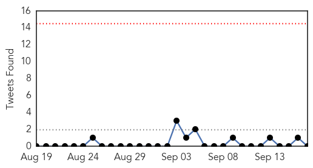

Unknown
30-Day Web Trend
3 alerts, 0 warnings

30-Day Twitter Trend
0 alerts, 0 warnings

Article Locations

Article Confidences

Top Articles:
- 0.999
- No cases of Enterovirus EV-D68 in Durham
- 0.998
- The rare respiratory virus sickening children has been confirmed in 16 states across the country
- 0.998
- Children’s respiratory illness spreads to more states
- 0.997
- Enterovirus may be cause of ill children in Connecticut
- 0.996
- EV-D68 cases hit Philly, hospitals on alert
- 0.996
- Rare respiratory illness spreads to a dozen states
- 0.995
- CDC confirms first N.J. case of rare enterovirus D68
- 0.995
- Respiratory virus enterovirus D68 may be in Westchester
- 0.993
- Enterovirus D68 Prompts Hospital Wards to Ban Child Visitors
- 0.992
- Pennsylvania has 3 confirmed cases of respiratory virus that has spread across Midwest
- 0.991
- Health department confirms first case of enterovirus in Connecticut
- 0.990
- Enterovirus 68: Public health alert as 7 new cases confirmed in Ontario, B.C.
- 0.989
- New respiratory virus coming to Arizona
- 0.987
- ‘Protocols in place’ to deal with three enterovirus cases in B.C.: Minister
- 0.987
- CDC Confirms First Case of EV-D68 in Connecticut Child
- 0.984
- 3 enterovirus cases but don't panic: B.C. minister
- 0.983
- First enterovirus cases confirmed in Pennsylvania
- 0.983
- DPH: One Case Of Enterovirus Confirmed In State
- 0.983
- DPH: One Case Of Enterovirus Confirmed In State
- 0.982
- Possible cases of Enterovirus being investigated at Baystate Med
- 0.981
- Dangerous stomach virus affecting children
- 0.979
- 7 cases of enterovirus confirmed in Ont., B.C.
- 0.979
- Oklahoma Becomes 12th State to Report Enterovirus
- 0.977
- First Virginia cases of enterovirus confirmed
- 0.976
- WAFB 9 News Baton Rouge, Louisiana News, Weather, Sports
- 0.976
- Enterovirus respiratory illness hits 12 states, still spreading
- 0.976
- Enterovirus D68: 3 confirmed cases in B.C.'s Lower Mainland
- 0.968
- Kids' virus may have finally reached Arizona
- 0.963
- Virginia has 7 confirmed cases of rare respiratory illness
- 0.957
- Enterovirus confirmed in New Jersey
- 0.948
- Greater Clark County Schools sends parents letter about Enterovi
- 0.947
- First case of enterovirus D68 confirmed in NYC, NJ, Connecticut
- 0.941
- Rare Respiratory Illness Confirmed in 12 States
- 0.917
- Chicago Tribune
- 0.917
- Chicago Tribune
- 0.917
- Chicago Tribune
- 0.917
- Chicago Tribune
- 0.917
- Chicago Tribune
- 0.917
- Chicago Tribune
- 0.917
- Chicago Tribune
- 0.917
- Chicago Tribune
- 0.917
- Chicago Tribune
- 0.917
- Chicago Tribune
- 0.917
- Chicago Tribune
- 0.917
- Chicago Tribune
- 0.917
- Chicago Tribune
- 0.917
- Chicago Tribune
- 0.917
- Chicago Tribune
- 0.917
- Chicago Tribune
- 0.917
- Chicago Tribune
Showing top 50 articles...
Top Tweets:
-
No tweets found for Sep 17, 2014
Dengue Fever
30-Day Web Trend
6 alerts, 8 warnings

30-Day Twitter Trend
0 alerts, 0 warnings

Article Locations

Article Confidences

Top Articles:
- 0.988
- Dengue cases climb up in north Karnataka
- 0.980
- "Dengue's Cousin" Makes First Independent Appearance in Brazil
- 0.947
- Breeding grounds: Ferozewala, Muridke high-risk areas for dengue fever
- 0.942
- Another polio case plagues province
- 0.930
- Killer mosquito invasion reaches the UK as bugs travel to Britain from Europe
- 0.929
- Killer mosquito invasion reaches the UK as bugs travel to Britain from Europe
- 0.826
- MP for West Portland speaks on increase in symptoms of chikungunya in Portland
- 0.698
- Venezuela on alert over mysterious, deadly disease
Top Tweets:
-
No tweets found for Sep 17, 2014